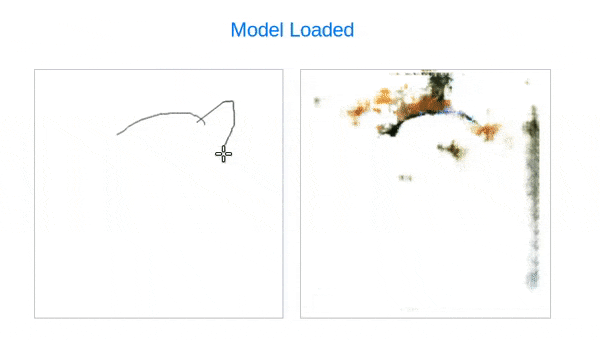

Machine Learning Workshop @Deloitte by AndreasRef
1) Træn dine egen klassifikationsalgoritme

2) Benyt prætrænede klassifikationsalgoritmer (mobileNet + coco-SSD)

- COCO-SSD multiple object detection kildekode link
3) Træn din egen regressionsalgoritme

- Øvelse: Træn regressionsmodellen og benyt output-værdien fra slider.value() til at kontrolleret MISTER BEAN på en sjov måde!
4) Track din krop

5) Genkend ansigter og følelser

6) Tegn med hjælp fra machine learning
- 
- Hvem tegner den flotteste kat eller den lækreste celebrity? Upload dit billede her!
- Hvem tegner det flotteste landskab? Upload dit billede her!

7) AI quiz
Having issues running the examples?
- Make sure you are running them in Google Chrome
- Older computers with less powerfull graphics cards might run out of memory if you record hundreds or thousands of examples from the webcam, especially on Windows. If it happens, switch to another computer or be more modest when recording training data.
Other links
Contact Andreas Refsgaard
Website / Email / Facebook / Twitter / Instagram / GitHub / Vimeo